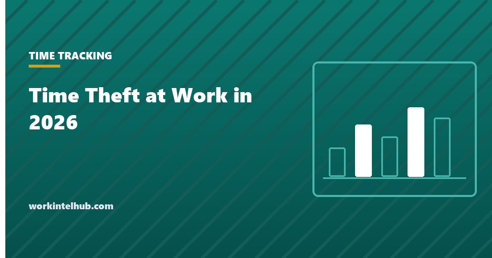
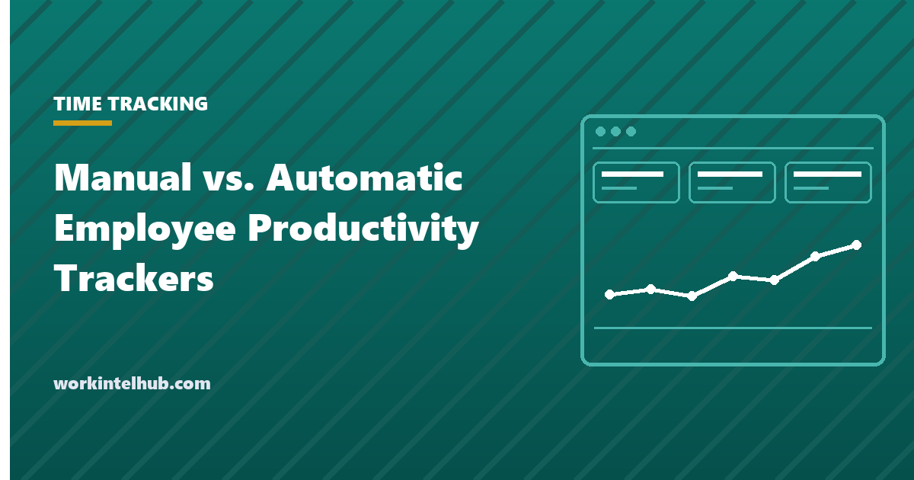
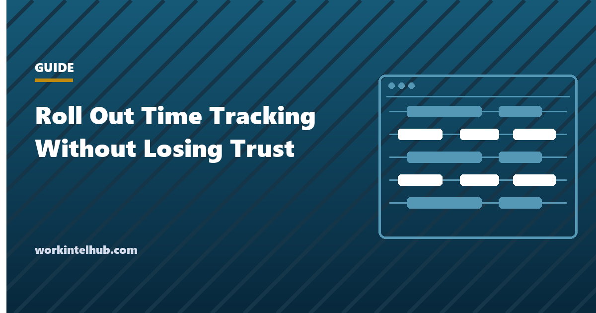

Time TrackingTime Theft at Work in 2026: What the Data Actually Shows
What time theft is, whether it is illegal in the US, what punishment usually looks like, and why the popular statistics do not hold up.
Topic
Time tracking records where hours actually go. Done openly it finds friction, protects focus time, and gives people evidence when they say the work does not fit the week. Done badly it reads as an accusation and the data quietly becomes fiction. These articles cover the practical side: choosing between manual and automatic capture, running a rollout that keeps trust, meeting the written notice US law expects before anything is switched on, and what to make of the time theft statistics that circulate in this space. On that last point our answer is unusual, because we could not verify any of them.
New to this topic? Time Tracking for Remote Employees That Your Team Will Support is the piece we would read first.

Time TrackingWhat time theft is, whether it is illegal in the US, what punishment usually looks like, and why the popular statistics do not hold up.
Time tracking for remote employees works when people see their own record first. A practical, vendor-neutral guide for US managers.

Time TrackingAn employee productivity tracker can be manual or automatic. Compare accuracy, trust, and cost, then pick the one your team will use.

Time TrackingA time tracking rollout plan for US managers: written notice first, policy before tool, a real pilot, and a ninety-day review.